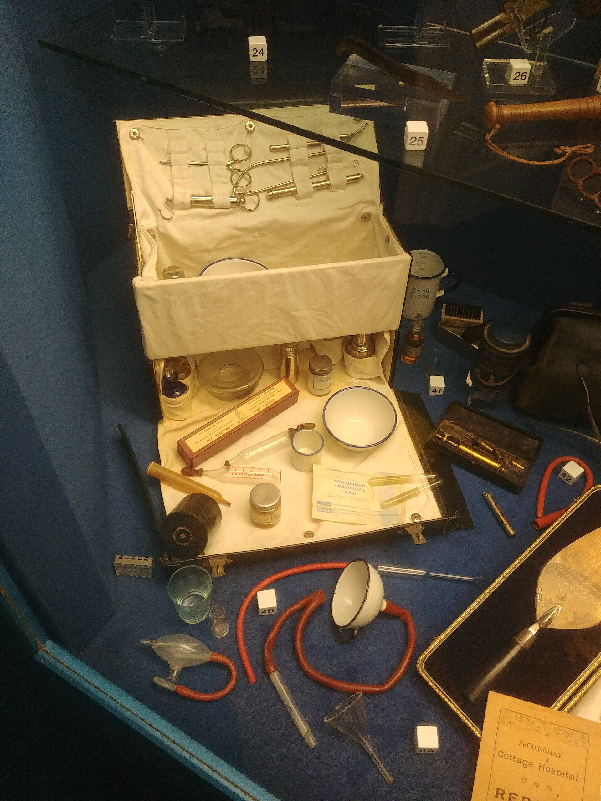
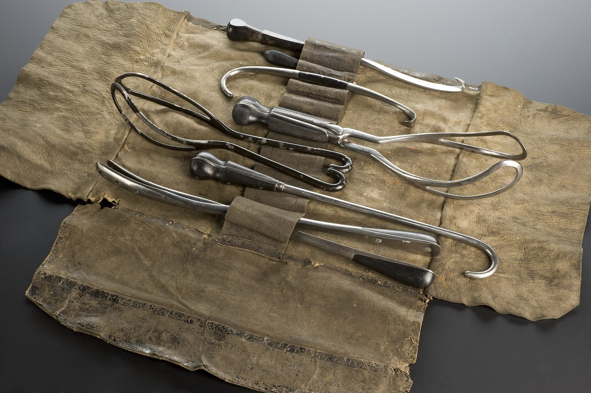
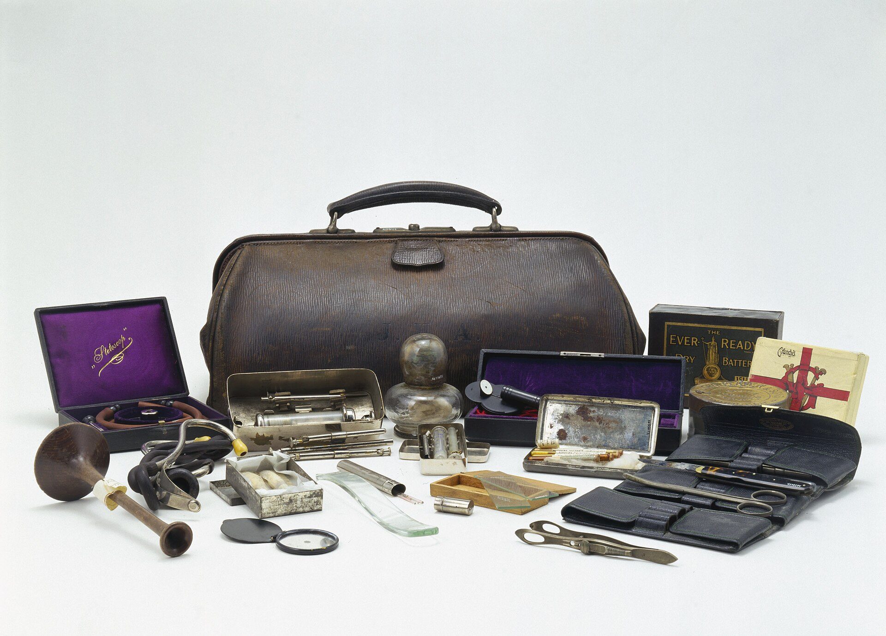
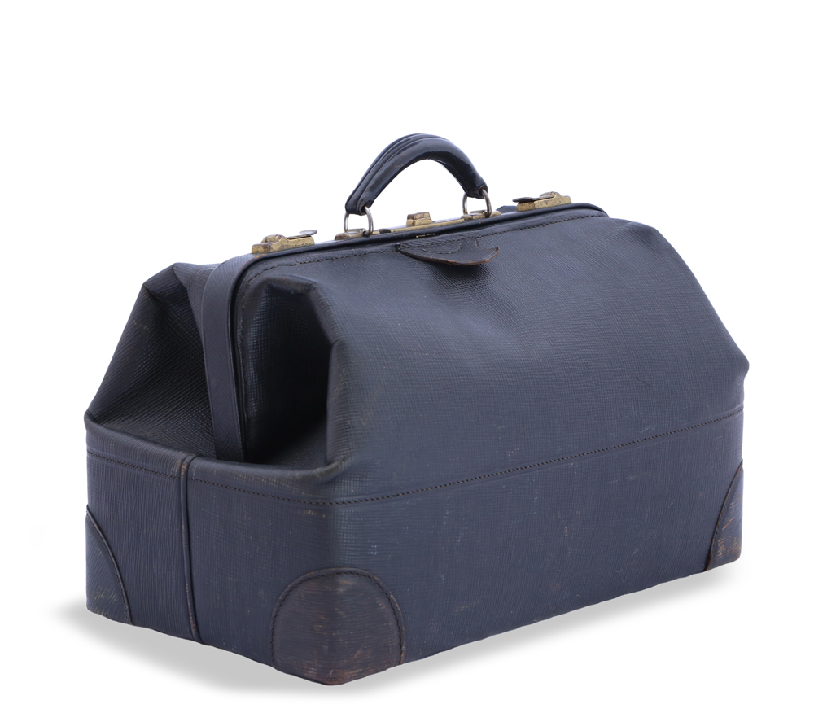
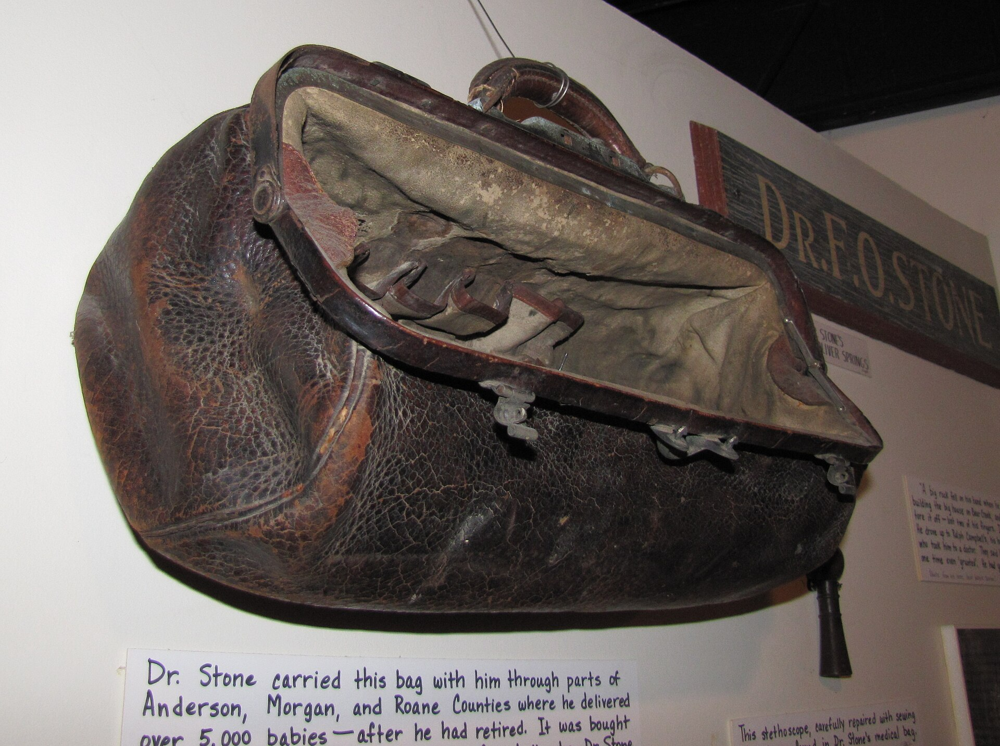
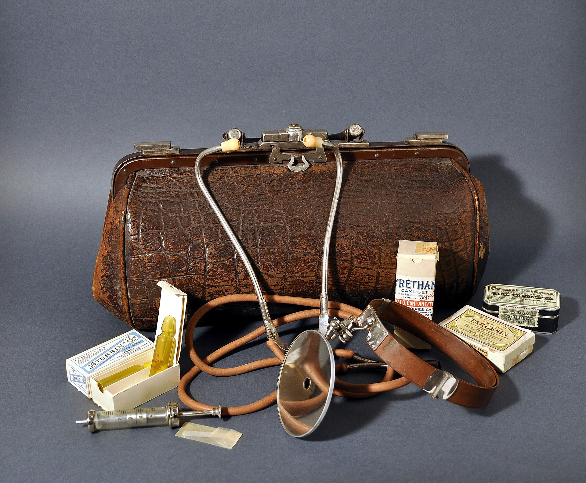
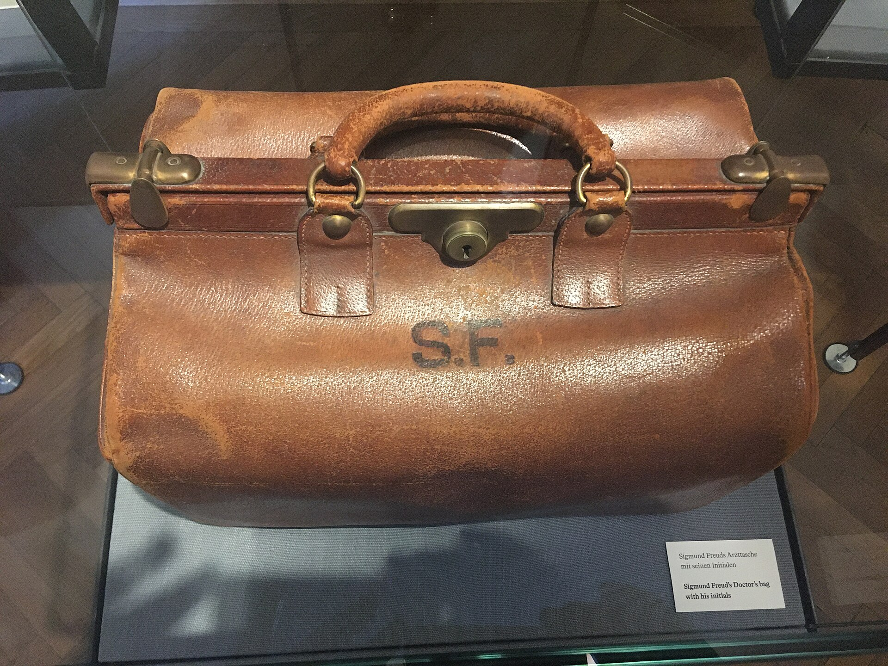

Coffeebreak Vintage Midwife Bags
Each picture below is a photograph of a bag or case. None of them is a portrait. The licence and the source sit under the picture. Current makers are linked at the end. Their own product photographs are not copied here.
Photographs







Share-alike applies to the CC BY-SA photographs. If you reuse one, keep the same or a compatible licence, name the photographer, and link the Commons file.
Current makers
These links go to makers that name a midwife bag or a home-birth bag. Coffeebreak has not bought from them and has not confirmed stock, price, or shipping. Their product photographs stay on their sites.
- Iron Duck, Chicopee, Massachusetts, makes bags it names for midwives. One example is the Midwife First Aid Bag, 36007PR-MID.
- Baby Lifeline Community Midwife Bag. The charity describes bags supplied to healthcare organisations.
- Openhouse Products Maternity & Newborn Bag, Australia. The maker says it was designed with maternity health professionals for home births.
A 1913 printed advertisement for W. H. Bailey & Son’s “Improved Surgeons’ Midwifery Case” is a drawing, so it is not shown here. The scan is CC BY 4.0 from the Wellcome Collection.
Privacy
This page does not ask for a name, a health detail, or an order. It does not save notes on this device. A link leaves Coffeebreak for the archive or the maker, and that site has its own privacy policy.
Disclaimer
Karen keeps her original brand and design rights in Coffeebreak, this page, and the Coffeebreak name and logo. Third-party trademarks and photographs belong to their respective owners. Coffeebreak is not affiliated with, endorsed by, or sponsored by those owners.
This page is for reading. It is not midwifery, medical, or legal advice, and it does not claim a medical approval. Historical instruments are not instructions. Coffeebreak does not take payment or a delivery promise for these bags.